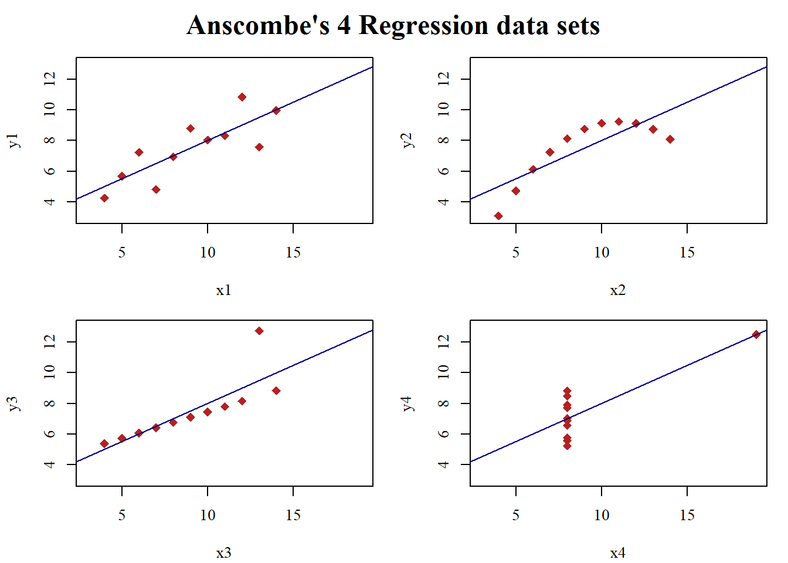

Code Here
data(anscombe) # Load Anscombe's data
# Set a serif font for text
par(family = "serif")
# Create four model objects
lm1 <- lm(y1 ~ x1, data = anscombe)
lm2 <- lm(y2 ~ x2, data = anscombe)
lm3 <- lm(y3 ~ x3, data = anscombe)
lm4 <- lm(y4 ~ x4, data = anscombe)
## Fancy version (per help file)
ff <- y ~ x
mods <- setNames(as.list(1:4), paste0("lm", 1:4))
# Use a for loop to create and store linear regression models of the four datasets
for (i in 1:4) {
ff[2:3] <- lapply(paste0(c("y", "x"), i), as.name)
mods[[i]] <- lmi <- lm(ff, data = anscombe)
}
# Apply coefficient
sapply(mods, coef) lm1 lm2 lm3 lm4
(Intercept) 3.0000909 3.000909 3.0024545 3.0017273
x1 0.5000909 0.500000 0.4997273 0.4999091Code Here
lapply(mods, function(fm) coef(summary(fm)))$lm1
Estimate Std. Error t value Pr(>|t|)
(Intercept) 3.0000909 1.1247468 2.667348 0.025734051
x1 0.5000909 0.1179055 4.241455 0.002169629
$lm2
Estimate Std. Error t value Pr(>|t|)
(Intercept) 3.000909 1.1253024 2.666758 0.025758941
x2 0.500000 0.1179637 4.238590 0.002178816
$lm3
Estimate Std. Error t value Pr(>|t|)
(Intercept) 3.0024545 1.1244812 2.670080 0.025619109
x3 0.4997273 0.1178777 4.239372 0.002176305
$lm4
Estimate Std. Error t value Pr(>|t|)
(Intercept) 3.0017273 1.1239211 2.670763 0.025590425
x4 0.4999091 0.1178189 4.243028 0.002164602Code Here
# Preparing for the plots (grid)
op <- par(mfrow = c(2, 2), mar = 0.1 + c(4, 4, 1, 1), oma = c(0, 0, 2, 0))
# Plot charts using a for loop
for (i in 1:4) {
ff[2:3] <- lapply(paste0(c("y", "x"), i), as.name)
plot(ff, data = anscombe, col = "firebrick", pch = 18, bg = "chocolate", cex = 1.3,
xlim = c(3, 19), ylim = c(3, 13), font.main = 2) # Using font.main for plot title
abline(mods[[i]], col = "navy")
}
# Add a title using mtext and specify font
mtext("Anscombe's 4 Regression data sets", outer = TRUE, cex = 1.5, font = 2)
Code Here
# Reset graphical parameters
par(op)